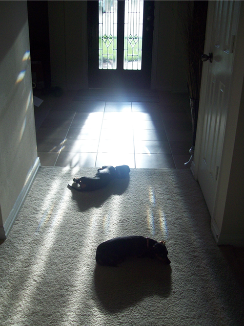

I’d like to welcome Y’all into Casa de Der for a bit to show you some of my most favoritest things ever.
- Pillows- I was once told by my brother in law that I had enough pillows for the Army to sleep over. He may be right, but that doesn’t keep me from piling up all those colorful softies on my couches!
- Sitting Area- No one sits here hardly ever, but it looks cute and colorful and pretty. All the hang on the wall goods were Hobby Lobby finds. Man, I could spend an eternity and a million dollars in that store.
- Trunks- These are a new addition to Casa de Der, but they filled the void where the Christmas tree had been for 2 months. When we removed it, we just felt all empty. So, of course we had to dash out and fill it promptly. They have all the pretty pops of color and people always love on them whenever they come over. So, win win!
- Bedding– I got this quilt at Target. It’s the cutest shade of green, its thin AND warm, reversable AND under $50 bucks. Nuff said and too bad I couldn’t find the green online, but the turquoise runs a close second. I had a mini meltdown in the store trying to pick between them.
- Frames- I have a thing for frames. Sometimes I buy frames and just take out the glass and backing or sometimes I go with my Tipsy friends to cool antique shows and load up on rustic wooden frames. I framed just about everything that I could in my home. I even framed a few frames. Ha.
- Door- I LOVE my door. It was the first thing that I saw and loved about our house when we bought it. The sun shines through it and it gets all prismy and gorgeous. My weenie babies love to bask in the sunshine pouring through during the day, so seeing their cute little limp sunning bodies thrown about the entry way makes me love it even more.



Recent Comments